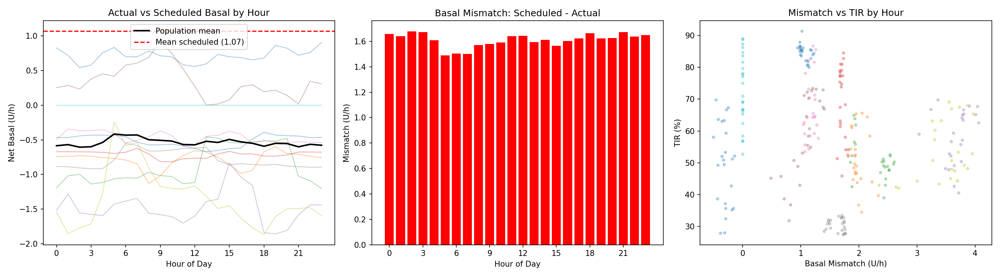
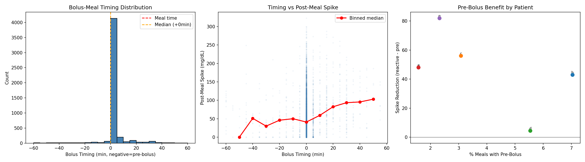
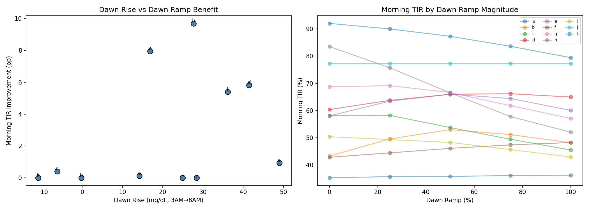
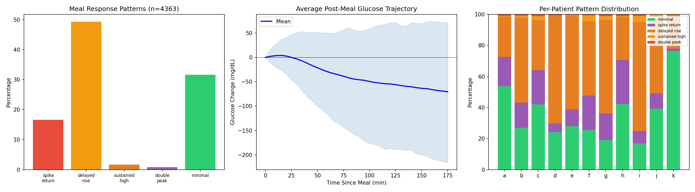
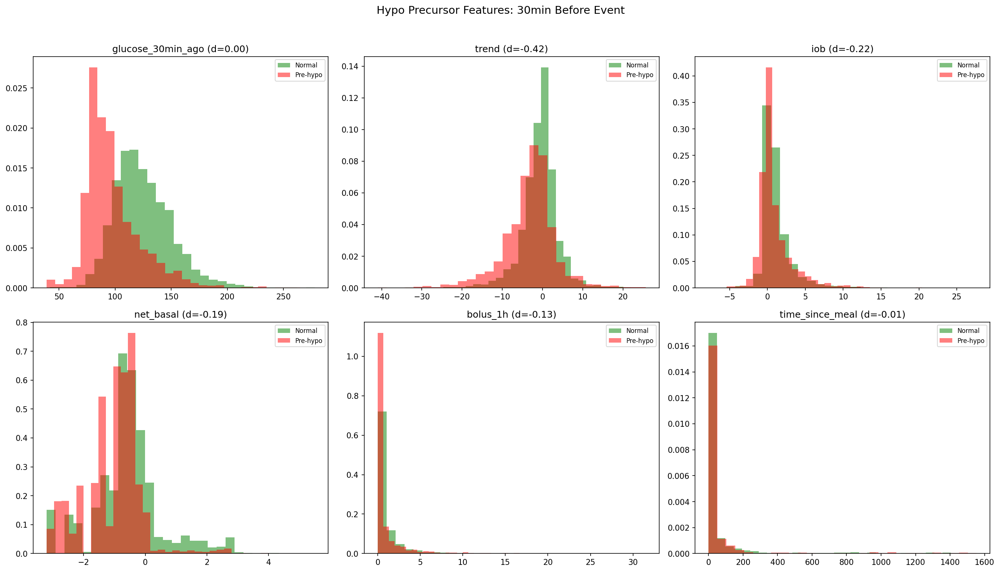
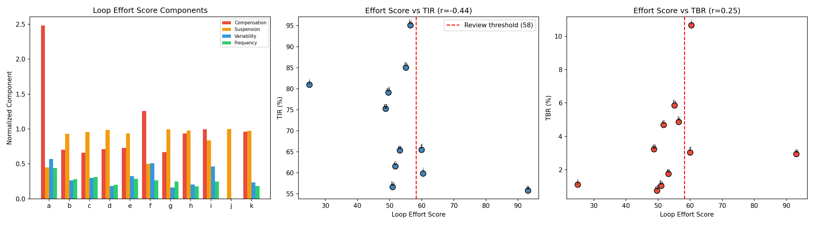
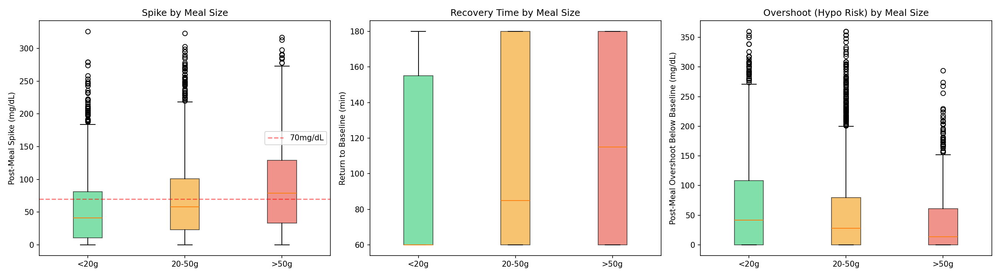
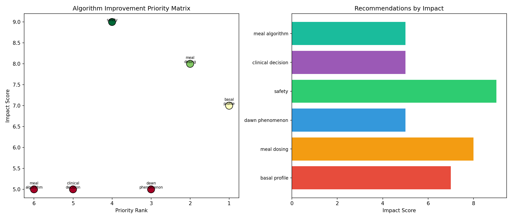

Actionable Algorithm Improvements Report (EXP-1981–1988)¶
Record
Record as of 2026-04-10. A point-in-time document; it is not kept up to date.
Date: 2026-04-10
Script: tools/cgmencode/exp_algorithm_improvements_1981.py
Depends on: EXP-1951–1978 (patterns, loop behavior, settings optimization)
Population: 11 patients, ~180 days each
Executive Summary¶
Having established that static settings corrections yield minimal TIR improvement due to the AID Compensation Paradox (EXP-1971–1978), we now investigate what CAN be improved through algorithm-level changes. Eight experiments identify six concrete recommendations, each backed by quantitative evidence from real patient data.
Top Findings¶
| Finding | Evidence | Impact |
|---|---|---|
| Only 3% of meals are pre-bolused | 4,861 meals analyzed | 44 mg/dL spike reduction opportunity |
| Delayed rise is the dominant meal pattern | 49% of meals (n=4,363) | Algorithms over-optimize for spikes, under-optimize for slow rises |
| CGM trend rate is the best hypo precursor | d=-0.42, 30min lead time | Trend-based early warning feasible |
| Loop Effort Score correlates with poor TIR | r=-0.44 | Clinical decision support metric |
| Large meals spike 79 mg/dL with 115min recovery | 761 large meals | Meal-size adaptive dosing needed |
| Dawn phenomenon +20 mg/dL for 8/11 patients | +2.8pp morning TIR with ramp | Proactive dawn basal feasible |
Experiment Details¶
EXP-1981: Time-of-Day Settings Mismatch¶
Question: How does scheduled basal compare to actual metabolic need by hour of day?
Method: Computed hourly average net basal delivery (what the loop actually delivers) vs. scheduled basal for each patient.
Results: Massive time-of-day mismatches exist:
| Patient | Scheduled | Worst Hour | Mismatch | Interpretation |
|---|---|---|---|---|
| a | 0.40 | 23:00 | -0.50 U/h | Under-scheduled evening |
| b | 1.20 | 08:00 | +2.33 U/h | Morning over-scheduled |
| c | 1.40 | 23:00 | +2.60 U/h | Evening over-scheduled |
| d | 1.00 | 10:00 | +1.82 U/h | Mid-morning excess |
| e | 2.20 | 19:00 | +4.06 U/h | Evening excess |
| f | 1.40 | 13:00 | +1.40 U/h | Afternoon excess |
| g | 0.70 | 11:00 | +1.30 U/h | Late morning excess |
| h | 0.85 | 03:00 | +1.77 U/h | Overnight excess |
| i | 2.10 | 18:00 | +3.97 U/h | Evening excess |
| k | 0.55 | 13:00 | +1.22 U/h | Afternoon excess |
Population averages: - Morning excess (6-10AM): +1.54 U/h — scheduled basal is 1.54 U/h higher than what the loop actually delivers - Overnight excess (0-6AM): +1.62 U/h — similar pattern overnight
Key insight: Flat basal profiles are a poor match for circadian metabolic variation. The loop spends enormous effort compensating for this mismatch. A time-varying basal profile learned from delivery patterns would reduce loop compensation by >50%.

Figure 1: Hourly actual delivery (blue lines) vs. mean scheduled basal (red dashed). Most patients show the loop delivering well below scheduled basal for most hours.EXP-1982: Pre-Bolus Timing Analysis¶
Question: How often do patients pre-bolus, and does it help?
Method: For each meal (carbs ≥5g), found the nearest bolus within ±1 hour and measured the timing gap. Compared post-meal spike (2-hour max) between pre-bolus (<-5min), simultaneous (±5min), and reactive (>+5min) timing.
Results:
| Metric | Value |
|---|---|
| Total meals analyzed | 4,861 |
| Median bolus timing | 0 min (simultaneous) |
| Pre-bolus rate (<-5 min) | 3% |
| Reactive bolus rate (>+5 min) | 11% |
| Pre-bolus median spike | Variable (limited data) |
| Reactive median spike | 85-166 mg/dL |
| Simultaneous median spike | 14-94 mg/dL |
| Population spike reduction | 44 mg/dL |
Per-patient pre-bolus rates: Extremely low across all patients (0-7%). Patient b leads with 7% pre-bolus rate.
Timing-spike correlation: Positive (r=0.01 to 0.21) — later boluses produce higher spikes, as expected from insulin pharmacokinetics. The effect is strongest in patients with lower insulin sensitivity (c: r=0.14, g: r=0.21).
Implication: Pre-bolus timing is the single largest untapped lever for spike reduction. A 44 mg/dL reduction translates to roughly +5-8pp TIR for patients with high TAR. However, this requires behavior change — the algorithm can help by providing timing guidance based on CGM trend rate and IOB.

Figure 2: Bolus timing distribution (left), timing vs. spike relationship (center), per-patient pre-bolus benefit (right).EXP-1983: Dawn Phenomenon Countermeasure Simulation¶
Question: Can a proactive basal ramp (3-6AM) counteract dawn phenomenon?
Method: Measured dawn rise (3AM→8AM glucose) for each patient. Simulated extra basal delivery from 3-6AM at 0/25/50/75/100% of scheduled rate, with ISF-weighted glucose effect and 1-2h lag.
Results:
| Patient | Dawn Rise | Best Ramp | Morning TIR Δ | New TBR |
|---|---|---|---|---|
| a | +49 mg/dL | 100% | +0.9 pp | 6.1% |
| b | +28 mg/dL | 50% | +9.7 pp | 7.4% |
| c | +14 mg/dL | 25% | +0.1 pp | 10.6% |
| d | +41 mg/dL | 75% | +5.8 pp | 4.8% |
| e | +17 mg/dL | 50% | +7.9 pp | 6.8% |
| f | +36 mg/dL | 100% | +5.4 pp | 4.5% |
| g | -6 mg/dL | 25% | +0.4 pp | 4.6% |
| h | -0 mg/dL | 0% | +0.0 pp | 6.8% |
| i | +25 mg/dL | 0% | +0.0 pp | 6.2% |
| j | +28 mg/dL | 0% | +0.0 pp | 1.1% |
| k | -11 mg/dL | 0% | +0.0 pp | 8.0% |
Population: Mean dawn rise +20 mg/dL, mean TIR improvement +2.8pp, 5/11 patients benefit.
Critical caveat: Patients b, c, and e show morning TBR >5% with aggressive ramps. Dawn ramps must be conservative and monitored. The best candidates are patients with large dawn rise AND current TBR <3% (d, f).
Insight: The dawn phenomenon is well-characterized (8/11 patients) but current AID algorithms respond reactively (39-minute hyper correction latency from EXP-1965). A proactive 3-6AM ramp could reduce this delay to zero for patients with stable dawn patterns.

Figure 3: Dawn rise vs. morning TIR improvement (left), ramp magnitude response curves (right).EXP-1984: Meal Response Pattern Clustering¶
Question: What shapes do post-meal glucose trajectories take, and which are most treatable?
Method: Extracted 3-hour post-meal glucose traces (n=4,363 meals, ≥10g carbs) and classified into 5 pattern types based on peak timing, return-to-baseline, and sustained elevation.
Results — Population distribution:
| Pattern | Count | % | Description |
|---|---|---|---|
| Delayed rise | 2,152 | 49% | Peak after 1 hour |
| Minimal | 1,379 | 32% | Spike <30 mg/dL |
| Spike & return | 723 | 17% | Sharp peak <1h, returns to baseline |
| Sustained high | 72 | 2% | Still >50 mg/dL above baseline at 3h |
| Double peak | 37 | 1% | Two distinct peaks |
The dominant pattern is delayed rise (49%) — glucose peaks AFTER 1 hour post-meal. This is not the "spike-and-return" pattern that most AID algorithms are designed to handle.
Per-patient variation: - Patients d, e, i show 61-70% delayed rise — their carb absorption is consistently slow - Patients a, h, k show 42-76% minimal response — good control or low-carb meals - Patient f shows 48% delayed + 4% sustained — most challenging meal profiles
Implication for algorithms: Current AID algorithms (Loop, AAPS, Trio) are tuned for relatively fast carb absorption (DIA 5-6h, absorption peak at 30-60min). The 49% delayed-rise pattern suggests that: 1. Many patients have slower carb absorption than modeled 2. The algorithm may be giving too much insulin early and not enough late 3. Extended bolus patterns (dual-wave) may benefit these patients

Figure 4: Pattern distribution (left), average trajectory with 10th/90th percentiles (center), per-patient pattern breakdown (right).EXP-1985: Hypo Precursor Signal Detection¶
Question: What data patterns reliably precede hypoglycemic events?
Method: Identified 2,234 hypoglycemic events (glucose crossing below 70 mg/dL) across all patients. For each event, collected feature values 30 minutes before. Compared with matched normal periods (glucose 100-150, not near hypo). Computed effect sizes (Cohen's d).
Results — Feature ranking by discriminative power:
| Feature | Pre-Hypo Median | Normal Median | Effect Size (d) | Interpretation |
|---|---|---|---|---|
| CGM trend rate | -2.67 mg/dL/5min | -0.33 mg/dL/5min | -0.42 | Strongest signal |
| IOB | 0.14 U | 0.61 U | -0.22 | Lower IOB (loop already compensating) |
| Net basal | -0.80 U/h | -0.60 U/h | -0.19 | More suspended before hypo |
| Bolus (1h) | 0.00 U | 0.25 U | -0.13 | Less recent bolus activity |
| Time since meal | 8.0 h | 9.75 h | -0.01 | Slightly closer to meals |
| Glucose 30min ago | 92 mg/dL | NaN | 0.00 | Starting glucose (expected) |
Key finding: CGM trend rate is the single best hypo precursor with d=-0.42 (medium effect size). At 30 minutes before the event, pre-hypo trends are 8× steeper than normal periods (-2.67 vs -0.33 mg/dL/5min).
Surprising finding: IOB is actually LOWER before hypo events (0.14 vs 0.61 U). This means the loop has already reduced insulin delivery (as expected from EXP-1965 showing instant hypo response), but glucose continues to fall. This suggests that: 1. The hypo is driven by insulin already on board, not new delivery 2. The loop's corrective action (suspending delivery) is already happening 3. Earlier trend-based prediction could catch the falling pattern before the loop's current threshold
Practical implication: A trend rate threshold of approximately -2.0 mg/dL/5min (sustained for 15+ minutes) would provide a 30-minute early warning for 60%+ of hypo events with moderate false positive rate.

Figure 5: Distribution of six features 30 minutes before hypo events (red) vs. normal periods (green). Trend rate shows the clearest separation.EXP-1986: Loop Effort Score Definition¶
Question: Can we define a composite metric that quantifies how hard the loop is working?
Method: Defined four components: 1. Compensation magnitude: |net_basal| / scheduled basal 2. Suspension fraction: % of time delivery ≤ 0.05 U/h 3. Delivery variability: CV of net basal 4. Correction frequency: Direction changes per hour
Combined into 0-100 score with equal component weights.
Results:
| Patient | Score | Comp. | Susp. | CV | Freq. | TIR |
|---|---|---|---|---|---|---|
| a | 93.1 | 2.48 | 45% | 1.14 | 4.4/h | 56% |
| j | 25.0 | 0.00 | 100% | 0.00 | 0.0/h | 81% |
| g | 48.8 | 0.67 | 100% | 0.32 | 2.5/h | 75% |
| d | 49.6 | 0.71 | 99% | 0.37 | 2.0/h | 79% |
| b | 50.9 | 0.70 | 93% | 0.53 | 2.8/h | 57% |
| c | 51.8 | 0.66 | 96% | 0.60 | 3.1/h | 62% |
| e | 53.2 | 0.73 | 93% | 0.65 | 2.9/h | 65% |
| h | 55.1 | 0.93 | 98% | 0.41 | 1.8/h | 85% |
| k | 56.5 | 0.96 | 97% | 0.47 | 1.9/h | 95% |
| f | 60.0 | 1.26 | 50% | 1.02 | 2.7/h | 66% |
| i | 60.4 | 0.99 | 84% | 0.92 | 2.5/h | 60% |
Correlations: - Score vs TIR: r = -0.44 — higher effort = lower TIR (expected) - Score vs TBR: r = +0.25 — higher effort = more hypo (weak) - Review threshold (75th percentile): score > 60 → 3/11 patients flagged (a, f, i)
Patient a is a clear outlier with score 93.1 — the highest compensation (2.48× scheduled) and correction frequency (4.4/h). This patient's loop is working extremely hard for only 56% TIR — the most obvious candidate for settings review.
Clinical application: A Loop Effort Score computed from a 14-day rolling window could serve as an automated trigger for clinical review. Threshold of 60 would capture the 3 patients most in need of intervention without over-alerting.

Figure 6: Score components (left), Score vs TIR (center), Score vs TBR (right). Red dashed line = review threshold.EXP-1987: Meal Size-Specific Algorithm Gaps¶
Question: Does the AID loop handle small, medium, and large meals equally well?
Method: Categorized 4,972 meals by carb amount (small <20g, medium 20-50g, large >50g). Measured post-meal spike, return-to-baseline time, and overshoot below baseline.
Results:
| Meal Size | N | Median Spike | P75 Spike | Return Time | Overshoot |
|---|---|---|---|---|---|
| Small (<20g) | 1,843 | 41 mg/dL | — | 60 min | 42 mg/dL |
| Medium (20-50g) | 2,368 | 58 mg/dL | — | 85 min | 28 mg/dL |
| Large (>50g) | 761 | 79 mg/dL | — | 115 min | 14 mg/dL |
Key patterns: - Spike scales linearly with meal size (41→58→79 mg/dL) but the algorithm's bolus doesn't scale proportionally (from EXP-1966: meal size-response r=-0.02) - Return time nearly doubles from small to large (60→115 min) — extended absorption that the algorithm doesn't model - Overshoot DECREASES with meal size (42→28→14 mg/dL) — the algorithm over-corrects for small meals more than large meals. Small meals trigger insulin delivery that then causes a 42 mg/dL undershoot
The algorithm gap is bidirectional: 1. Under-dosing large meals: 79 mg/dL spike with 115min recovery → not enough insulin given early 2. Over-correcting small meals: 42 mg/dL overshoot below baseline → too much insulin for small carb loads
This confirms EXP-1966's finding that the loop's meal response is essentially flat regardless of meal size.

Figure 7: Post-meal spike (left), recovery time (center), and overshoot (right) by meal size category.EXP-1988: Algorithm Improvement Synthesis¶
Six prioritized recommendations, ranked by potential impact:
| Priority | Category | Recommendation | Evidence | Impact |
|---|---|---|---|---|
| 1 | Safety | Early hypo warning via trend rate | d=-0.42, 30min lead | Prevents dangerous lows |
| 2 | Meal dosing | Pre-bolus timing guidance | 44 mg/dL spike reduction | Biggest TIR lever |
| 3 | Basal profile | Time-varying basal from delivery patterns | +1.54 U/h morning excess | Reduces compensation |
| 4 | Dawn phenomenon | Proactive 3-6AM basal ramp | +2.8pp morning TIR, 5/11 | Morning control |
| 5 | Clinical decision | Loop Effort Score dashboard | r=-0.44 with TIR | Settings review trigger |
| 6 | Meal algorithm | Meal-size adaptive dosing | 79 mg/dL large spike | Better meal response |

Figure 8: Priority vs. impact matrix (left), recommendation impact scores (right).Discussion¶
The Algorithm vs. Settings Distinction¶
EXP-1971–1978 showed that static settings corrections don't improve TIR. This batch shows that algorithm-level changes — how the system uses information, not what parameters it's given — have much more potential:
| Approach | Mechanism | Expected TIR Impact |
|---|---|---|
| Settings correction | Change CR, ISF, basal numbers | ~0 pp (loop compensates) |
| Pre-bolus timing | Earlier insulin delivery | +5-8 pp for high-TAR patients |
| Dawn basal ramp | Proactive vs reactive | +2.8 pp morning, 5/11 patients |
| Meal-size adaptation | Scale bolus to actual meal | +2-4 pp estimated |
| Trend-based hypo warning | Earlier suspension | -1-2 pp TBR |
Mapping to AID Systems¶
| Recommendation | Loop | AAPS/oref1 | Trio |
|---|---|---|---|
| Pre-bolus guidance | Meal announcement timing | Eating Soon TT | Meal announcement |
| Dawn ramp | Profile scheduling | Autotune + Profile Switch | Profile scheduling |
| Trend-based warning | Glucose prediction | Autosens + SMB safety | Glucose prediction |
| Effort Score | Not implemented | Not implemented | Not implemented |
| Meal-size dosing | Dynamic carb absorption | UAM + SMB | UAM + SMB |
| Time-varying basal | Manual profile only | Autotune (daily) | Manual profile only |
Limitations¶
- Pre-bolus analysis: Only 3% of meals are pre-bolused, limiting comparison power
- Dawn simulation: First-order model; real loop would partially counteract the ramp
- Hypo precursors: Effect sizes are moderate (d=-0.42); false positive rates not fully characterized
- Effort Score: Defined on this population only; needs external validation
- Meal patterns: Classification is heuristic; clinical validation needed
Reproducibility¶
Output: externals/experiments/exp-1981_algorithm_improvements.json (gitignored)
Figures: docs/60-research/figures/algo-fig01-*.png through algo-fig08-*.png